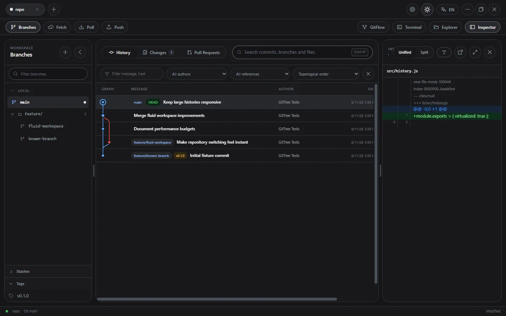

GitTree
- Latest release
- 1.1.0, 30 October 2026
- Platforms
- Windows, macOS, Linux
- Built with
- Electron, TypeScript
- Interface
- English and Italian, light and dark themes
- Licence
- MIT
See your repository clearly. GitTree is a fast, open-source Git desktop client for visual history, explicit workflows and local-first repository management.
It works directly on the local repository and runs real Git operations, so it stays compatible with the workflows and tools you already use. You don’t need an account, there is no telemetry and nothing is uploaded anywhere.

Features
Repositories and branches
- Several repositories in tabs, with recursive folder import, worktree-aware discovery and
gittree://links - Branch navigator with local and remote folders, instant search and ahead/behind counts
- Create, rename, delete, track and check out branches, also into a linked worktree; recover any commit from the reflog
History
- Multi-lane commit graph with real parents and octopus merges
- Virtualised, paged history that stays fast on large repositories
- Diffs with word-level highlighting
Changes
- Stage and unstage by file or hunk, discard, commit, amend, sign-off, GPG and SSH signing, hooks
- Merge, rebase and cherry-pick with previews, and a conflict editor with incoming, current and result panes
- Stashes, tags, remotes and submodules from the sidebar and the settings
Hosting and comfort
- Pull request review for GitHub and GitLab (sign-in with a device code) and Azure DevOps (personal access token), with inline comments and encrypted drafts
- Compare and pull request links for GitHub, GitLab, Bitbucket Cloud and Azure DevOps
- Light and dark themes in five tones each, and keyboard shortcuts for fetch, pull, push and new branch
Privacy and security
- No GitTree account and no built-in telemetry
- Nothing uploaded automatically
- Sign-in tokens stay in the main process, encrypted with the system’s secure storage
- Git operations are validated, run one at a time per repository, and changes are guarded by a snapshot
Install
Download the installer for your system from the latest release. Until production certificates are in place, the system may warn that the build is unsigned.
| Platform | Download |
|---|---|
| Windows | Installer (.exe) |
| macOS | Disk image (.dmg) for Apple silicon and Intel |
| Linux | AppImage, Debian package or pacman package |
On Arch Linux and its derivatives:
sudo pacman -U GitTree-*-linux-x64.pacmanFrom source
You need Node.js 22 or later, Git and npm:
git clone https://github.com/giannoccarol/gittree.git
cd gittree
npm ci
npm start